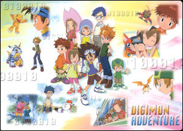
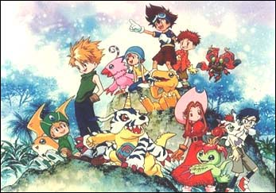

Histoire
Voici l'histoire de la saison 1 du dessin-animé dont s'est inspiré le jeu Pendant un séjour ennuyeux dans un camp de vacances, sept amis: Tai, Matt, Sora, Mimi, Joe, Izzy, et TK trouvent des mini-ordinateurs, des Digivices. Puis soudainement, ils sont entraînés dans un tourbillon et sont transportés dans le monde digital. Ils font alors une rencontre très particulière, ils se retrouvent face à des Digimons. Tai se lie très vite d' amitié avec Agumon, et les autres trouvent chacun un partenaire digimon. Les petits Digimons sont très heureux, car à l' aide de leurs nouveaux amis, ils peuvent se transformer en digimon plus puissant (la digivolution), et n' auront plus peur d' affronter les méchants digimons. Ils accompagnent donc les enfants, qui eux, recherchent un moyen de retourner chez eux... Mais avant de commencer leur voyage, ils apprennent qu' ils ne sont pas simplement arrivés ici par malchance, mais qu' il sont les digisauveurs et que leur but est de libérer le digimonde des mauvais digimons pour apporter la paix parce que le sort du monde réel dépend du digimonde. Devimon ne sera que le premier ennemi à arrêter parmi tant d' autres, ce qui n' est vraiment pas sans danger. Mais nos sept amis sont décidés à préserver ce monde en paix. |
  |
Source: http://digitalmonsters.free.fr
Merci à Juju de m'avoir proposé de mettre cette histoire sur mon site.